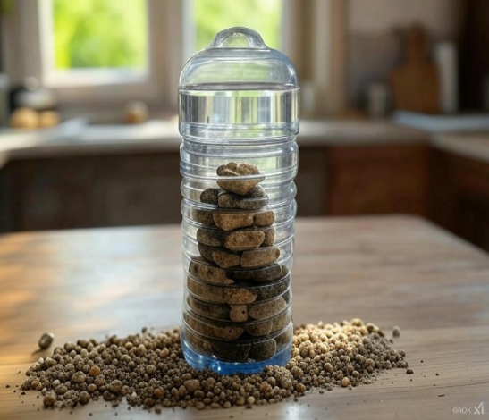

Task: Build your very own water filter using things you find at home to learn how we clean water. 🌊🔍
Tip: Layer sand, charcoal, and small pebbles inside a plastic bottle. Then, pour dirty water through it and watch how it filters out the dirt. It's like magic! 🪄💧